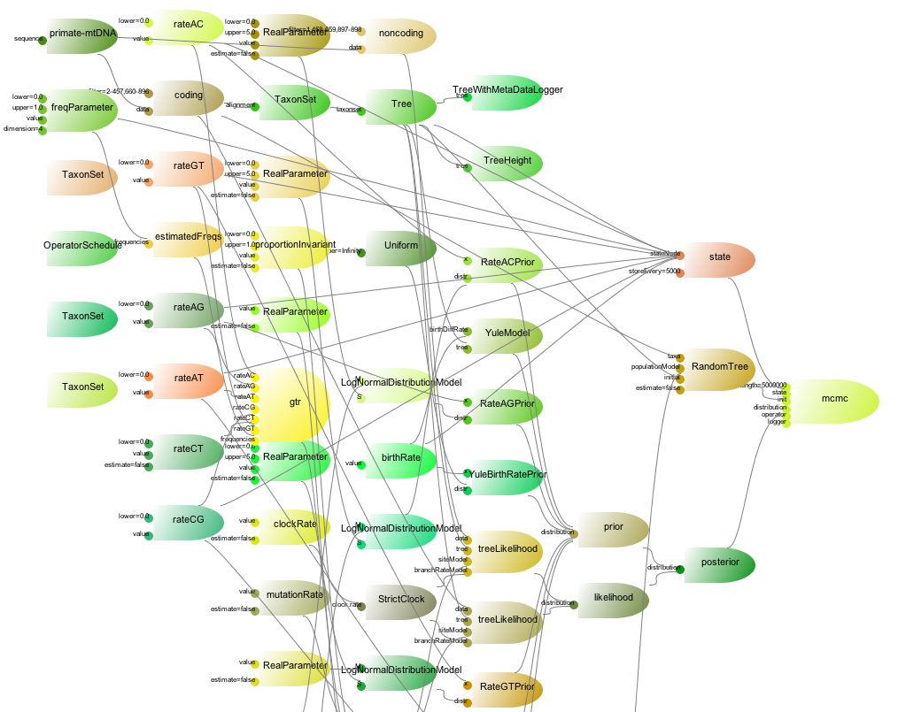

BEAST 2 Architecture
A 5 minute overview

Common usage

BEAST2 Requirements
- Plugin / package architecture
- Checkpointing / restarting analyses
- Self documenting code
- Automatic software testing (junit, fest, Hudson)
- Generalisation of existing models
BEAST Objects & Inputs
|  |
|
Package overview
- beast
- app
- beast
- beauti
- ...
- core
- evolution
- alignment
- ...
- math
- util
- test
- app
Useful links
- General: http://beast2.org/
- Tutorials: http://beast2.org/tutorials
- Book: http://beast2.org/book/
- Source code: https://github.com/CompEvol/beast2/
- User list: https://groups.google.com/forum/#!forum/beast-users
- Issues: https://github.com/CompEvol/beast2/issues
Useless stats:
- 716 classes + 98 test classes (was 3965 + 42 in BEAST 1)
- 118 236 (551 273) lines, 75 757 (335 371, 5.5% parsers) lines of code
- 461 (2539) files
These slides: http://rbouckaert.github.io/BEAST2Intro/index.html